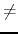
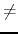

Dragster racing is not very popular in Brazil, but it attracts crowds in the USA. The fans enjoy seeing cars racing at speeds up to 250 mph, even if only for a few seconds. Many competitors are amateur mechanics that just attached rockets and other contraptions to create ultra-fast cars.
Dragster competitions are elimination tournaments, where each confrontation consists of two competitors racing side by side and only one of them being declared the winner (the fastest one, obviously). The winners are then rematched into new races, until only one competitor remains - which is declared the winner.
Rubens is an experienced pilot, with a racing career in several categories, including Formula 1. However, after facing some difficulties, he decided to dedicate himself to dragster racing. Using his vast experience from Formula 1, he can, observing the competitors, tell what is the probability each one would prevail during a race between any pair of them.
Even though Rubens is a good pilot, he's not very good in math nor computing, so he asked your help to write a program that, given the probabilities computed by Rubens for all races between each pair of pilots, and the description of the tournament structure, determines his proability of winning the tournament.
The input consists of several test cases. The first line of a test case contains a single integer N, indicating the number of competitors in this tournament (
2 N300). In the tournament descripton, each competitor is identified by an integer from 1 to N, and the races are identified by integers from N + 1 to
2 x N - 1. Rubens is always identified by the number 1. The N next lines describe the probability matrix computed by Rubens. The i-th line contains N real numbers
M[i, j] separated by spaces (
0M[i, j]1, for
1iN and
1jN). Each matrix entry
M[i, j] indicates the probability of competitor i winning a race against competitor j (
0.001M[i, j]0.999 and
M[i, j] + M[j, i] = 1 for ij , and
M[i, j] = 0 for i = j). The probabilities will always be given with three decimal places. Each one of the next N - 1 lines contains two integers A, B, describing a race. A and B are race or competitor identifiers (
1A2 x N - 1 e
1B2 x N - 1). The first of these lines describes race N + 1, the next line describes race N + 2, and so on. When a race identifier k appears in the input as A, that means the winner of race k will run against B; similarly, when a race identifier k appears as B, the winner of race k will run against A.
N300). In the tournament descripton, each competitor is identified by an integer from 1 to N, and the races are identified by integers from N + 1 to
2 x N - 1. Rubens is always identified by the number 1. The N next lines describe the probability matrix computed by Rubens. The i-th line contains N real numbers
M[i, j] separated by spaces (
0M[i, j]1, for
1iN and
1jN). Each matrix entry
M[i, j] indicates the probability of competitor i winning a race against competitor j (
0.001M[i, j]0.999 and
M[i, j] + M[j, i] = 1 for ij , and
M[i, j] = 0 for i = j). The probabilities will always be given with three decimal places. Each one of the next N - 1 lines contains two integers A, B, describing a race. A and B are race or competitor identifiers (
1A2 x N - 1 e
1B2 x N - 1). The first of these lines describes race N + 1, the next line describes race N + 2, and so on. When a race identifier k appears in the input as A, that means the winner of race k will run against B; similarly, when a race identifier k appears as B, the winner of race k will run against A.
The end of input is indicated by a line containing a single zero.
For each test case inthe input, your program should print a single line, containing a single real number, with six decimal places precision, indicating the probability of Rubens winning the tournament.
4
0.000 0.500 0.400 0.400
0.500 0.000 0.500 0.500
0.600 0.500 0.000 0.600
0.600 0.500 0.400 0.000
1 2
3 4
5 6
5
0.000 0.500 0.600 0.600 0.001
0.500 0.000 0.500 0.500 0.500
0.400 0.500 0.000 0.500 0.500
0.400 0.500 0.500 0.000 0.500
0.999 0.500 0.500 0.500 0.000
3 8
9 6
4 5
1 2
0
0.200000
0.225125